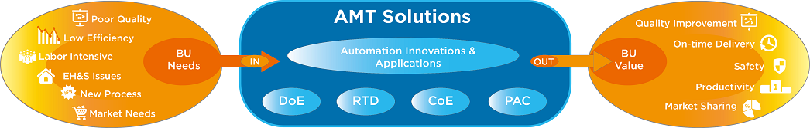
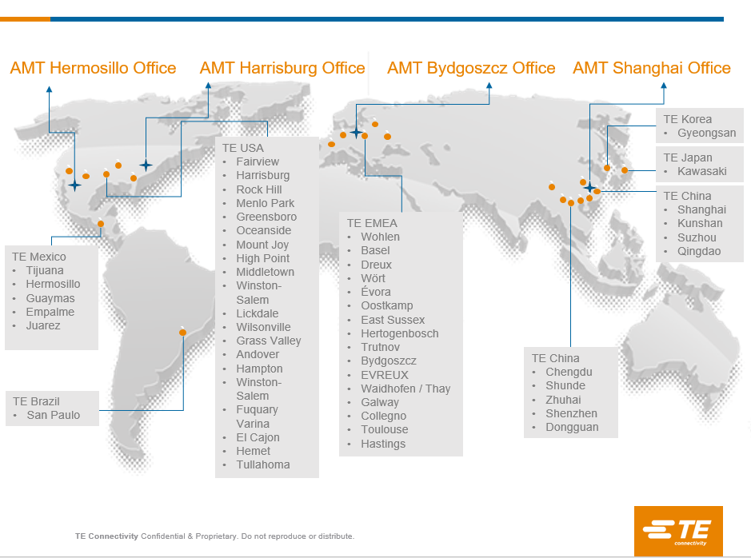

About AMT
AMT (Automation Manufacturing Technology) is the One-Stop Automation Solution provider for TE business units to improve productivity, delivery and quality. We innovate, design, develop and build automation machines for TE manufacturing sites globally. Our technology branches include Flexible and Precise Assembly, Low Cost Soldering, Precise Joining, Flexible Feeding, Machine Vision Guided Robotic Assembly, Automatic Cable Preparing and Assembly, Flexible Stitching, AI (Artificial Intelligence) Machine Vision, AI Sensor Toolkit, Flexible Mobile Manipulation System and Material Handling Automation etc.
Global Footprint of AMT Solutions for TE
AMT Map
